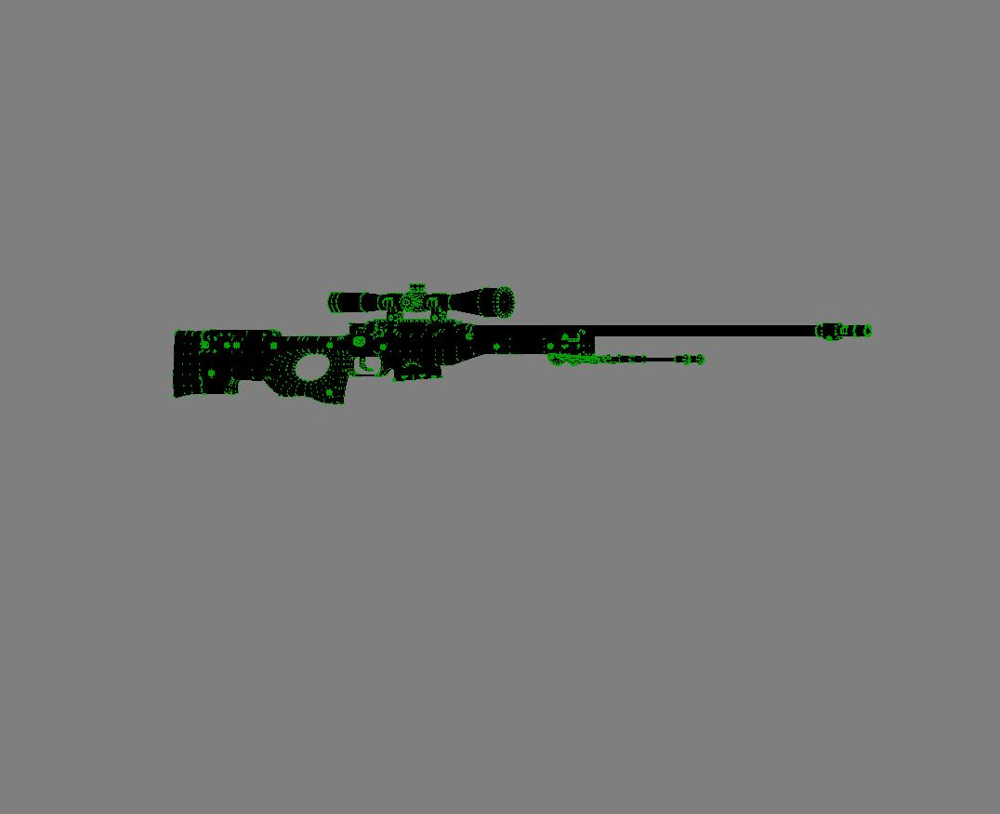
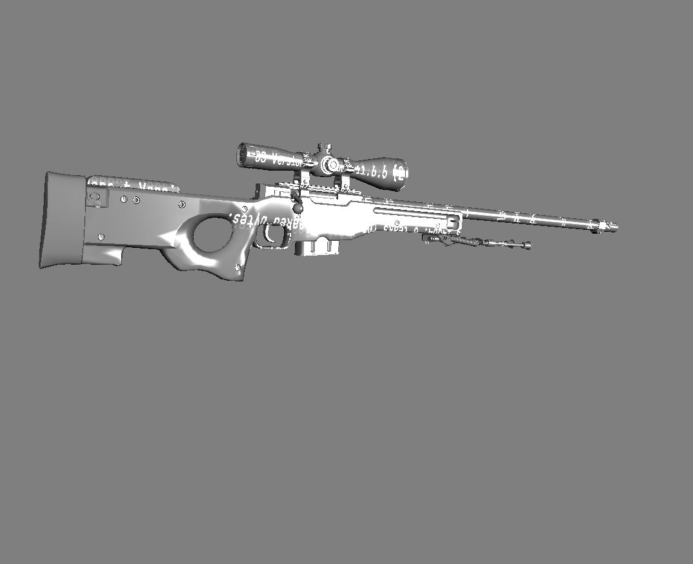
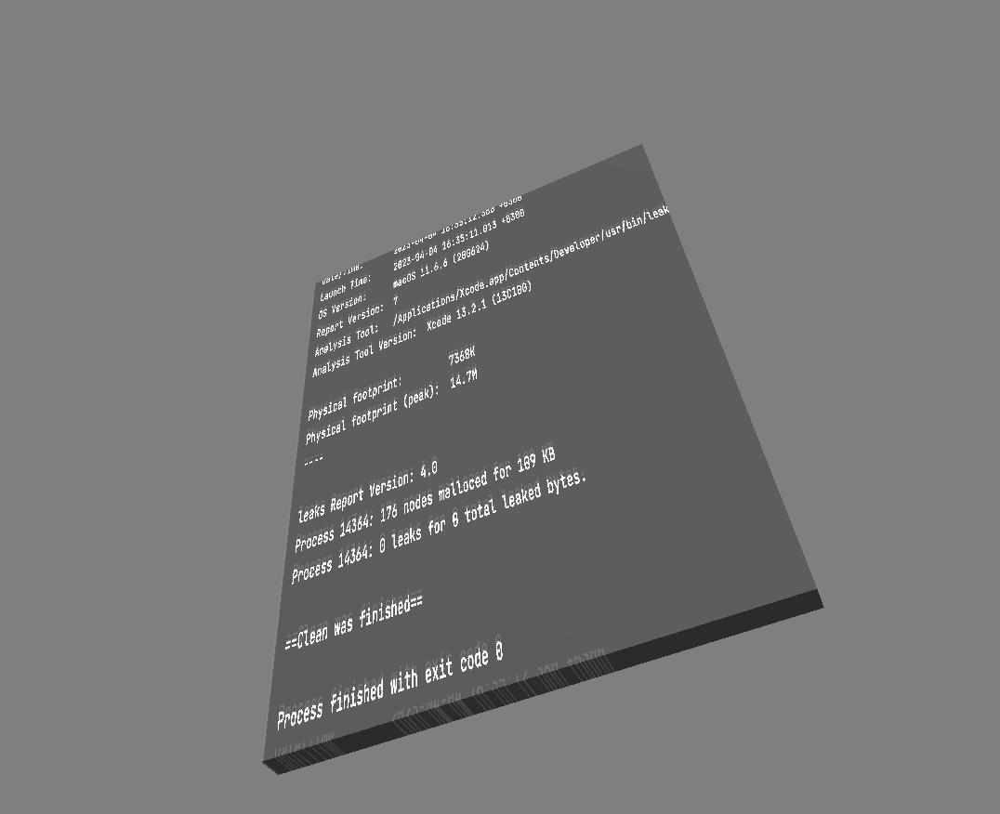
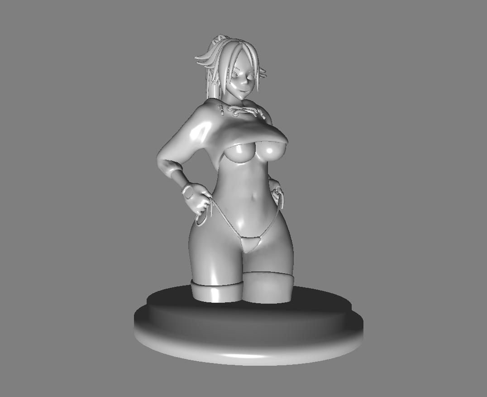
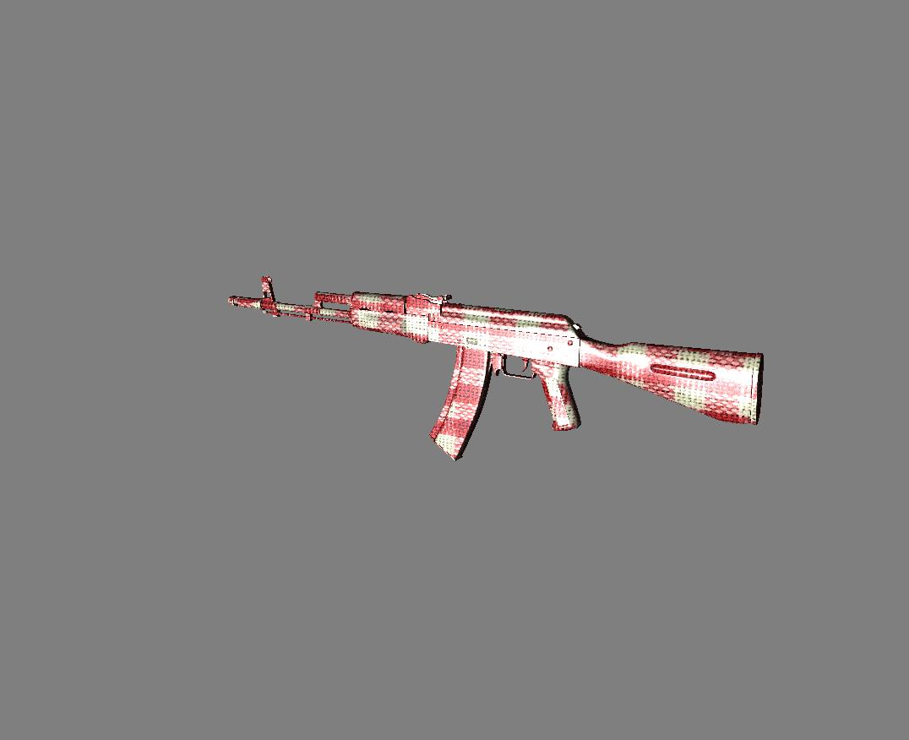
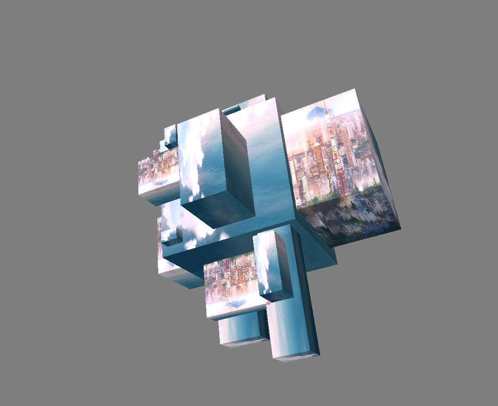
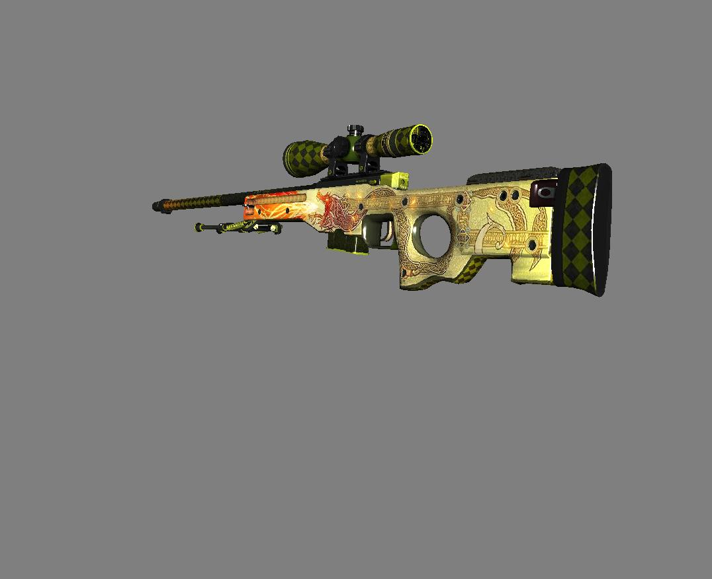
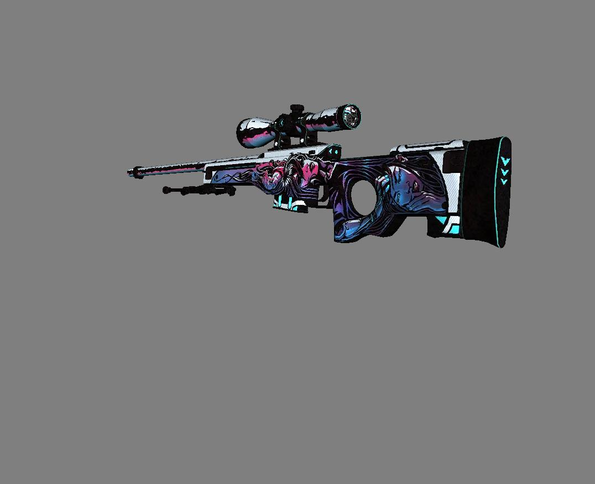

Проект 3DViewer v2.1 является доработкой проекта 3DViewer2.0.
Основное отличие от предыдущей версии проекта в том, что теперь доступен просмотр модели
не только в каркасной форме, но и с возможностью наложить текстуру на модель (если таковая поддерживает это).
Кнопка отвечающая за импорт находится справа во вкладке Import и имеет название Wavefront (.obj) (legacy). Либо сочетание клавиш Shift + I
Кнопка отвечающая за импорт текстуры также находится во вкладке Import и имеет название Load Texture. Либо сочетание клавиш Shift + T
Управление параметрами отрисовки находится во вкладке Scene Settings
Есть возможность изменить отображаемую проекцию, перейти от каркасной модели к текстуре (если она загружена) нажав кнопку Texture Overlay
и убрать текстуру, перейдя к каркасной модели, нажав кнопку Reset Texture Горячая клавиша Shift + R
Есть возможность выбрать примитив отрисовки для каркасной модели
В этой вкладке есть возможность сделать скриншот сцены нажав Record Image
Также есть два типа записи анимации в (.gif) формат:
1) Запись движений пользователя (кнопка Record Animation) - после нажатия кнопки у вас будет 5 секунд для произвольной работы с моделью
2) Запись статической анимации (кнопка Record Static Animation) - для того чтобы не испортить статическую анимацию, просим вас не мешать программе в процессе записи анимации
Вкладка Rotation отвечает за вращение объекта по всем трем осям
Вкладка Location отвечает за расположение объекта по всем трем осям
Вкладка Scale отвечает за размер объекта
Усправление освещение осуществляется через вкладку Light
Есть возможность установить расположение света в пространстве по всем трем осям
Есть возможность установить базовый цвет источника света
Есть возможность выбрать одно из трех методов тонирования, Плоское, Гуро, Фонга
Усправление параметрами объекта осуществляется через вкладку Object Settings
Есть возможность установить толщину линий, цвет линий, тип линий
Есть возможность установить размер точек, цвет точек, тип точек
Есть возможность задать цвет заднего фона
       